Potencias de números racionales
Una potencia es una forma abreviada de escribir una multiplicación repetida del mismo número.
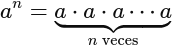
- a es la base
- n es el exponente
Ejemplos:
- 24 = 2⋅2⋅2⋅2 = 16
- (−3)2 = (−3)⋅(−3) = 9
- 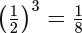
Casos especiales:
- a1 = a
- a0 =1 (con a ≠ 0 )
- 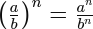
Operaciones con potencias
Producto de potencias con la misma base
am⋅an = am+n
Ejemplo:
23⋅24 = 23+4 = 27
Cociente de potencias con la misma base
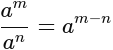
Ejemplo:
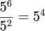
Potencia de una potencia
(am)n = am⋅n
Ejemplo:
(32)3=36
Potencia de un producto
(a⋅b)n=an⋅bn
Ejemplo:
67 = (2·3)7 = 27·37
Potencia de un cociente
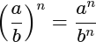
Ejemplo:
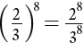
Potencias de exponente negativo
Un exponente negativo no significa que el resultado sea negativo.
👉 Significa que estamos tomando el inverso (recíproco) de la potencia con exponente positivo.
Definición clave
Para cualquier número a ≠ 0:
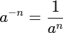
Ejemplos básicos
Ejemplo 1
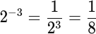
Ejemplo 2
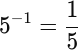
Ejemplo 3
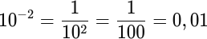
👉 Por eso los exponentes negativos aparecen mucho con potencias de 10.
¿Por qué funciona así? (explicación razonada)
Observa esta sucesión:
- 103 = 1000
- 102 = 100
- 101 = 10
- 100 = 1
Cada vez que bajamos un exponente, dividimos entre 10.
Seguimos bajando:
- 10−1=0,1
- 10−2=0,01
👉 Así se entiende que el exponente negativo indica dividir.
Potencias con exponente negativo y fracciones
Base fraccionaria
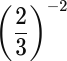
Primero cambiamos el signo del exponente invirtiendo la fracción:
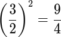
Regla importante
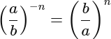
Exponente negativo y paréntesis
⚠️ Mucho cuidado con los paréntesis:

Errores típicos del alumnado
- ❌ Pensar que el resultado es negativo
- ✔ El signo depende de la base, no del exponente
- Ten en cuenta que:
- ❌ 2−3 = −8
- ✔ 2−3 = 1/8
- ❌ No invertir la fracción
- ✔ Exponente negativo → se invierte la base
Relación con la notación científica
Ejemplo:
3⋅10−4 = 0,0003
👉 El exponente negativo indica que el número es muy pequeño.
Raíces cuadradas
La raíz cuadrada de un número es el valor que, al multiplicarse por sí mismo, da ese número.

Ejemplos
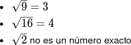
Raíces exactas y no exactas
- Raíces exactas: el resultado es un número entero
- Ej.:
 entonces se dice que 25 es cuadrado perfecto.
entonces se dice que 25 es cuadrado perfecto.
- Ej.:
- Raíces no exactas: el resultado no es un número entero
- Ej.: 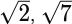
Raíz cuadrada de números negativos
⚠️ No existe la raíz cuadrada de un número negativo dentro de los números reales.
Ejemplo:
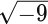 no es un número real
Las raíces cuadradas son radicales de índice 2 como veremos a continuación.
Radicales
¿Qué significa el índice de un radical?
Un radical se escribe así:
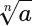
- n es el índice del radical
- a es el radicando
👉 El índice indica cuántas veces hay que multiplicar el resultado por sí mismo para obtener el radicando.
Raíces con índice impar
Raíz cúbica (índice 3)
 Ejemplos:
Ejemplos:
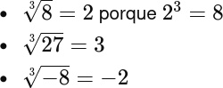
👉 Las raíces de índice impar sí pueden tener radicando negativo.
Otros índices impares
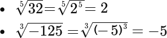
Raíces con índice par (distinto de 2)
Raíz cuarta, sexta, etc.
Ejemplo:
\(\sqrt{16}\)
Buscamos un número que elevado a 4 dé 16:
\(2^4 = 16 \Rightarrow \sqrt[4]{16} = 2\)
👉 Las raíces de índice par solo existen si el radicando es positivo o cero.
Ejemplos:
- \(\sqrt[4]{81} = 3\)
- \(\sqrt[6]{64} = 2\)
⚠️ No existe:
\(\sqrt[4]{-16}\) no es un número real
Radicales exactos y no exactos
Radical exacto
El resultado es un número entero.
Ejemplo:
\(\sqrt[3]{125} = 5\)
Radical no exacto
No se puede expresar como número entero.
Ejemplo:
\(\sqrt[3]{2}\)
Simplificación de radicales
Regla general:
\(\sqrt[n]{a·b} = \sqrt[n]{a}\cdot\sqrt[n]{b}\)
👉 Buscamos potencias exactas del índice.
Ejemplo 1 (raíz cúbica):
\(\sqrt[3]{16}\)
Descomponemos:
\(16=8⋅2\)
\(\sqrt[3]{16} = \sqrt[3]{8}\sqrt[3]{2} = 2\sqrt[3]{2}\)
Ejemplo 2 (raíz cuarta):
\(\sqrt[4]{48}\)
\(48=16⋅3\)
\(\sqrt[4]{48} = 2\sqrt[4]{3}\)
Operaciones con radicales
Suma de radicales
⚠️ Para sumar radicales, deben tener el mismo índice y el mismo radicando.
\(\sqrt[3]{2} + 4\sqrt[3]{2}=5\sqrt[3]{2}\)
Ejemplo (no se pueden sumar):
❌ \(\sqrt[3]{2} + \sqrt[4]{2}\)
👉 Tienen distinto índice → no se suman.
Producto de radicales
Ejemplo (multiplicación)
\(\sqrt[3]{2}·\sqrt[3]{4} = \sqrt[3]{8}\)
Relación con potencias
Un radical se puede escribir como potencia:
\(\sqrt[n]{a} = a^{\frac{1}{n}}\)
Ejemplos:
- \(\sqrt[3]{8} = 8^{1/3}\)
- \(\sqrt[4]{16} = 16^{1/4}\)
👉 Esto ayuda a entender por qué funcionan las operaciones.
Se pueden realizar operaciones con radicales de distinto índice reduciéndolos previamente a un índice común, interpretando cada radical como una potencia de exponente fraccionario y llevando esos exponentes a denominador común; este procedimiento está indicado para la multiplicación y la división, pero no para la suma ni la resta, ya que en estas solo se pueden operar radicales semejantes.
Extraer factores de una raíz enésima
Extraer factores de una raíz enésima consiste en sacar fuera del radical las potencias completas del índice.
👉 Es lo mismo que simplificar un radical.
Idea clave
En una raíz de índice n:
- Toda potencia n-ésima puede salir de la raíz.
- Lo que no llegue a ser potencia n-ésima se queda dentro.
Regla general
\(\sqrt[n]{a^n \cdot b} = a \sqrt[n]{b}\)
Pasos para extraer factores:
- Descomponer el radicando en factores.
- Buscar potencias exactas del índice.
- Sacar fuera de la raíz lo que sea potencia n-ésima.
- Dejar dentro lo que sobre.
Ejemplos guiados rápidos
🔹 Raíz cúbica
\(\sqrt[3]{24}\)
\(\sqrt[3]{24} = \sqrt[3]{8}\sqrt[3]{3} = 2\sqrt[3]{3}\)
🔹 Raíz cuarta
\(\sqrt[4]{48}\)
\(\sqrt[4]{48} = 2\sqrt[4]{3}\)
⚠️ Errores típicos
❌ Sacar factores que no son potencia exacta
✔ Solo se sacan potencias del índice
❌ Olvidar simplificar completamente
✔ Hay que comprobar que dentro ya no quede nada que se pueda sacar
Ejemplo final completo (extraer factores)
Simplifica:
\(\sqrt[3]{108}\)
Paso 1. Descomponemos el radicando:
\(108=27⋅4\)
Paso 2. Identificamos el cubo perfecto:
\(27 = 3^3\)
Paso 3. Extraemos el factor:
\(\sqrt[3]{108} = \sqrt[3]{27}\sqrt[3]{4}\)
Resultado final:
\(\boxed{3\sqrt[3]{4}}\)
Racionalización
👉 Racionalizar significa quitar la raíz del denominador de una fracción.
🔹 CASO 1: Denominador con una sola raíz
Ejemplo:
\(\frac{3}{\sqrt{5}}\)
👉 Multiplicamos arriba y abajo por la misma raíz:
\(\frac{3}{\sqrt{5}} \cdot \frac{\sqrt{5}}{\sqrt{5}} = \frac{3\sqrt{5}}{5}\)
🔹 CASO 2.1: Denominador con un número y una raíz
Ejemplo:
\(\frac{2}{3\sqrt{2}}\)
👉 Multiplicamos arriba y abajo por la raíz:
\(\frac{2}{3\sqrt{2}} \cdot \frac{\sqrt{2}}{\sqrt{2}} = \frac{2\sqrt{2}}{6} = \frac{\sqrt{2}}{3}\)
🔹 CASO 2: Denominador con suma o resta (binomio)
Buscamos siempre aplicar en el denominador la fórmula: \((a²-b²)=(a+b)(a-b)\)
Ejemplo:
\(\frac{1}{\sqrt{3}+2}\)
👉 Multiplicamos por el conjugado (cambiamos el signo):
\(\frac{1}{\sqrt{3}+2} \cdot \frac{\sqrt{3}-2}{\sqrt{3}-2}\)
Denominador:
\((\sqrt{3})^2 - 2^2 = 3 - 4 = -1\)
Resultado:
\(\sqrt{3}+2\)
🔹 CASO 3: Raíz en el denominador con índice distinto de 2
👉 El objetivo sigue siendo el mismo: quitar la raíz del denominador.
Idea clave: Cuando el denominador tiene una raíz de índice n, debemos multiplicar por el factor que falta para que el radicando se convierta en una potencia exacta de índice n.
Ejemplo 1: Raíz cúbica
\(\frac{1}{\sqrt[3]{2}}\)
Buscamos qué número falta para que el radicando sea un cubo perfecto.
\(2·4 = 8 \quad (\text{y } 8 = 2^3)\)
Multiplicamos por \(\sqrt[3]{4}\):
\(\frac{1}{\sqrt[3]{2}} \cdot \frac{\sqrt[3]{4}}{\sqrt[3]{4}} = \frac{\sqrt[3]{4}}{\sqrt[3]{8}}=2\sqrt[3]{8}\)
Resultado:
\(\frac{\sqrt[3]{4}}{2}\)
Ejemplo 2: Raíz cuarta
\(\frac{3}{\sqrt[4]{5}}\)
Buscamos una potencia cuarta:
\(5⋅125 = 5· 5^3 =625 \Rightarrow \quad (5^4)\)
Multiplicamos por \(\sqrt[4]{125}\):
\(\frac{3}{\sqrt[4]{5}} \cdot \frac{\sqrt[4]{125}}{\sqrt[4]{125}} = \frac{3\sqrt[4]{125}}{\sqrt[4]{625}}\)
\(\sqrt[4]{625} = 5\)
Resultado:
\(\frac{3\sqrt[4]{125}}{5}\)
🧠 Regla general para el alumnado
Si tienes:
\(\frac{a}{\sqrt[n]{b}}\)
Multiplica por:
\(\frac{\sqrt[n]{b^{\,n-1}}}{\sqrt[n]{b^{\,n-1}}}\)
👉 Porque:
\(b·b^{n-1} = b^n\)
Notación científica
¿Por qué usamos la notación científica?
En Matemáticas, Física, Biología o Tecnología aparecen números:
- Muy grandes → número de estrellas, distancia entre planetas…
- Muy pequeños → tamaño de una bacteria, masa de un átomo…
Ejemplos:
- 300 000 000
- 0,00000045
👉 Estos números son incómodos de escribir y fáciles de confundir.
La notación científica sirve para escribirlos de forma más corta y clara.
¿Qué es la notación científica?
Un número está escrito en notación científica cuando tiene la forma:
a⋅10n
donde:
- a es un número decimal
- 👉 tiene una sola cifra distinta de 0 antes de la coma
- n es un número entero (positivo, negativo o cero)
- Condición importante
- 1 ≤ a < 10
Ejemplos correctos:
- 3⋅105
- 7,2⋅10−4
Ejemplos incorrectos:
- ❌ 30⋅104
- ❌ 0,5⋅103
Potencias de 10 y el movimiento de la coma
Potencias de 10 positivas
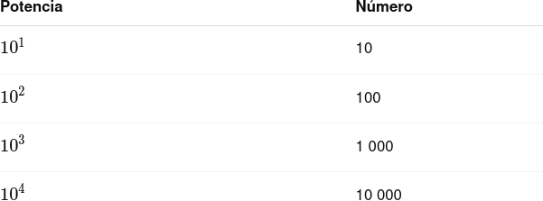
👉 Multiplicar por 10n desplaza la coma n posiciones a la derecha
Potencias de 10 negativas
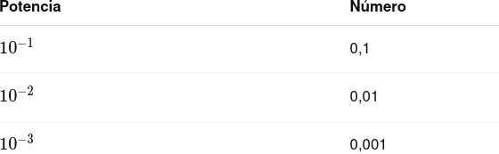
👉 Multiplicar por 10−n desplaza la coma n posiciones a la izquierda
Pasar un número a notación científica
🔹 Caso 1: Números grandes
Ejemplo:
45 000 000
Paso 1. Colocamos la coma detrás del primer número distinto de 0
4,5
Paso 2. Contamos cuántos lugares hemos movido la coma
→ 7 lugares a la izquierda
Paso 3. Escribimos la potencia de 10
4,5⋅107
🔹 Caso 2: Números pequeños
Ejemplo:
0,00032
Paso 1. Colocamos la coma detrás del primer número distinto de 0
3,2
Paso 2. Contamos los lugares movidos
→ 4 lugares a la derecha
Paso 3. Exponente negativo
3,2⋅10−4
🧠 Truco rápido
- Si el número es mayor que 1 → exponente positivo
- Si el número es menor que 1 → exponente negativo
Pasar de notación científica a número normal
Ejemplo 1
3⋅104
Movemos la coma 4 lugares a la derecha:
30 000
Ejemplo 2
5,6⋅10−3
Movemos la coma 3 lugares a la izquierda:
0,0056
Comparar números en notación científica
Ejemplo:
2,5⋅106 y 7,1⋅105
Paso 1. Comparamos los exponentes:
106 > 105
👉 El número con mayor exponente es mayor, aunque el otro tenga un número decimal más grande.
Por tanto:
2,5⋅106 > 7,1⋅105
Sólo en caso de igualdad de exponentes comparamos los números decimales.
Notación científica en la vida real
- Distancia de la Tierra al Sol: 1,5⋅108 km
- Tamaño de una bacteria: 2⋅10−6 m
- Masa de un electrón: 9,1⋅10−31 kg
👉 Se usa en Ciencias porque simplifica cálculos y evita errores.
Errores típicos del alumnado (y cómo evitarlos)
Ejemplo 1:
- ❌ 0,32⋅105
- ✔ 3,2⋅104
Ejemplo 2:
- ❌ 45⋅103
- ✔ 4,5⋅104
Cuidado con la notación científica en:
- ❌ Olvidar el signo del exponente
- ✔ Pensar siempre: ¿he movido la coma a la derecha o a la izquierda?
➕➖✖️➗ Operaciones en notación científica
1. Suma en notación científica
⚠️ Idea clave
👉 Solo se pueden sumar números en notación científica si tienen la misma potencia de 10.
🔹 Procedimiento paso a paso
- Paso 1. Comprobar los exponentes
- Paso 2. Si son distintos, igualarlos
- Paso 3. Sumar los números decimales
- Paso 4. Ajustar el resultado a notación científica
Ejemplo 1 (mismo exponente)
3,2⋅104+1,5⋅104
Sumamos los decimales:
(3,2+1,5)⋅104 = 4,7⋅104
✔ Ya está en notación científica.
Ejemplo 2 (exponentes distintos)
4⋅105 + 2⋅104
Paso 1. Igualamos exponentes
2⋅104 = 0,2⋅105
Paso 2. Sumamos:
4⋅105 + 0,2⋅105 = 4,2⋅105
2. Resta en notación científica
👉 Se hace igual que la suma, pero restando los decimales.
Ejemplo con exponentes iguales
6,5⋅106−2,3⋅106 = (6,5−2,3)⋅106 = 4,2⋅106
Ejemplo con exponentes distintos
5⋅103 − 3⋅102
Igualamos exponentes, en este caso pasamos:
3⋅102 = 0,3⋅103
Una vez que tenemos iguales exponentes, restamos:
(5−0,3)⋅103 =4,7⋅103
3. Multiplicación en notación científica
✅ Regla clave:
(a⋅10m) · (b⋅10n) = (a⋅b)⋅10m+n
👉 Se multiplican los decimales
👉 Se suman los exponentes
👉 Se ajusta el resultado si fuese necesario
Ejemplo 1
(2⋅103)(4⋅105) = (2⋅4)⋅103+5 = 8⋅108
8⋅108 está en notación científica sin necesidad de ser ajustado: ✔ Correcto.
Ejemplo 2 (ajustar resultado)
(6⋅104)·(5⋅102) = (6⋅5)102+4 = 30⋅106
30⋅106 ⚠️ No está bien escrita en notación científica.
Ajustamos: 3⋅107
4. División en notación científica
✅ Regla clave
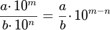👉 Se dividen los decimales
👉 Se restan los exponentes
👉 Se ajusta el resultado si fuese necesario
Ejemplo 1
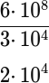Ejemplo 2 (ajustar resultado)
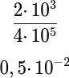
Ajustamos:
0,5⋅10−2 lo convertimos en 5⋅10−3
Ajustar el resultado a notación científica
Después de cualquier operación, si el número decimal no cumple
1 ≤ a < 10 hay que ajustarlo.
Ejemplos de ajustes:
- 12⋅104 = 1,2⋅105
- 0,3⋅106 = 3⋅105
Redondeo, truncamiento y errores
🔹 Redondeo
Redondear consiste en aproximar un número a un cierto número de cifras.
- Si la cifra siguiente es 5 o mayor, se suma 1.
- Si es menor que 5, se deja igual.
Ejemplo:
3,746 ≈ 3,75 (a las centésimas)
🔹 Truncamiento
Truncar es cortar el número a partir de una cifra, sin modificar la anterior.
Ejemplo:
3,746 → 3,74 (truncado a las centésimas)
🔹 Errores
🔹🔹 Error absoluto
Mide cuánto nos hemos equivocado en la aproximación.
\(\text{Error absoluto} = | \text{valor exacto} - \text{valor aproximado}|\)
Ejemplo:
\(∣3,746−3,75∣=0,004\)
🔹🔹 Error relativo
Indica el error en proporción al valor exacto.
\(\text{Error relativo} = \frac{\text{error absoluto}}{\text{valor exacto}}=\frac{| \text{valor exacto} - \text{valor aproximado}|}{\text{valor exacto}}\)
Ejemplo:
\(\text{Error relativo} = \frac{∣3,746−3,75∣}{3,746}=\frac{0,004}{3,746}=0,001067806\)
🔹🔹 Uso de notación científica para denotar errores
Los errores muy pequeños se suelen expresar en notación científica.
Ejemplo:
\(0,000004 = 4·10^{-6}\)
👉 Facilita comparar errores y ver cuál es mayor o menor.
Intervalos
🔹 ¿Qué es un intervalo?
Un intervalo es un conjunto de números reales comprendidos entre dos valores.
🔹 Tipos de intervalos
1.- Intervalo cerrado
Incluye los extremos.
\([a,b]\)
Ejemplo:
\([2,5]\)
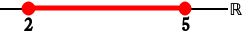
2.- Intervalo abierto
No incluye los extremos.
\((a,b)\)
Ejemplo:
\((2,5)\)
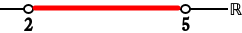
3.- Intervalo semiabierto
Incluye solo uno de los extremos.
\([a, b) \quad \text{o} \quad (a, b]\)
Ejemplos:
Cerrado-abierto:
\([2,5)\)
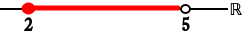
Abierto-cerrado:
\((2,5]\)
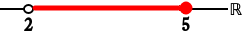
4.- Intervalos compactos
👉 Son los intervalos cerrados y acotados.
\([a,b]\)
🔹 Representación de intervalos
Los intervalos se pueden representar de múltiples formas:
- En la recta numérica, como hemos podido ver en los ejemplos anteriores, usando puntos y segmentos resaltados:
- Punto lleno → incluido
- Punto vacío → no incluido
- Con desigualdades, usando los operadores: <, >, ≥, ≤
- Con notación de intervalos
- Usando para la apertura de intervalos abiertos: (
- Usando para la apertura de intervalos cerrados: [
- Usando para la clausura de intervalos abiertos: )
- Usando para la clausura de intervalos cerrados: ]
Ejemplo, el intervalo del 3 abierto al 6 cerrado se representaría en las diferentes notaciones como:
- Recta real: 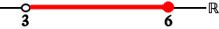
- Desigualdades: \(3 < x ≤ 6\)
- Intervalos: \((3,6]\)
🔹 Operaciones con intervalos
1.- Intersección
Son los números comunes a dos intervalos.
\(A \cap B\)
Ejemplo:
\([1,4] \cap (3,6) = (3,4]\)
2.- Unión
Son los números que están en uno o en otro intervalo.
\(A \cup B\)
Ejemplo:
\([1,4] \cup (3,6) = [1,6)\)
3.- Opuesto/negado del intervalo
Se obtiene quitando de la recta real el intervalo que se niega, y representando el resto como resultado.
Ejemplo:
\(\overline{[-2,5]} \rightarrow (-∞,-2)\cup(5,+∞)\)


{kind=link}
{kind=link}
{kind=link}
{kind=link}
{kind=link}
{kind=link}
{kind=link}
{kind=link}